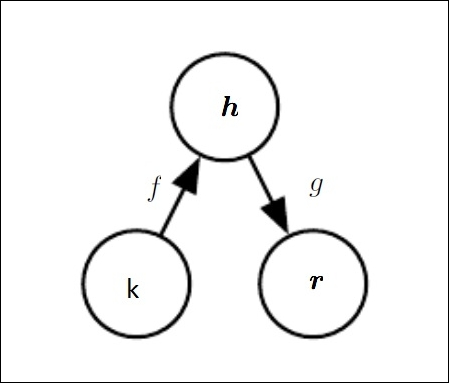
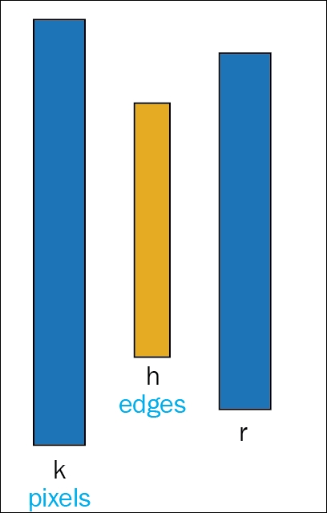
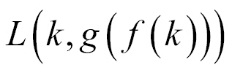

"People worry that computers will get too smart and take over the world, but the real problem is that they're too stupid and they've already taken over the world." | ||
| --Pedro Domingos | ||
In the last chapter, we discussed a generative model called Restricted Boltzmann machine. In this chapter, we will introduce one more generative model called autoencoder. Autoencoder, a type of artificial neural network, is generally used for dimensionality reduction, feature learning, or extraction.
As we move on with this chapter, we will discuss the concept of autoencoder and its various forms in detail. We will also explain the terms regularized autoencoder and sparse autoencoder. The concept of sparse coding, and selection criteria of the sparse factor in a sparse autoencoder will be taken up. Later, we will talk about the deep learning model, deep autoencoder, and its implementation using Deeplearning4j. Denoising autoencoder is one more form of a traditional autoencoder, which will be discussed in the end part of the chapter.
Overall, this chapter is broken into a few subsections, which are listed as follows:
An autoencoder is a neural network with one hidden layer, which is trained to learn an identity function that attempts to reconstruct its input to its output. In other words, the autoencoder tries to copy the input data by projecting onto a lower dimensional subspace defined by the hidden nodes. The hidden layer, h, describes a code, which is used to represent the input data and its structure. This hidden layer is thus forced to learn the structure from its input training dataset so that it can copy the input at the output layer.
The network of an autoencoder can be split into two parts: encoder and decoder. The encoder is described by the function h=f (k), and a decoder that tries to reconstruct or copy is defined by r = g (h). The basic idea of autoencoder should be to copy only those aspects of the inputs which are prioritized, and not to create an exact replica of the input. They are designed in such a way so as to restrict the hidden layer to copy only approximately, and not everything from the input data. Therefore, an autoencoder will not be termed as useful if it learns to completely set g(f(k) = k for all the values of k. Figure 6.1 represents the general structure of an autoencoder, mapping an input k to an output r through an internal hidden layer of code h:

Figure 6.1: General block diagram of an autoencoder. Here, input k is mapped to an output r through a hidden state or internal representation h. An encoder f maps the input k to the hidden state h, and decoder g performs the mapping of h to the output r.
To provide one more example, let us consider Figure 6.2. The figure shows a practical representation of an autoencoder for input image patches k, which learns the hidden layer h to output r. The input layer k is a combination of intensity values from the image patches. The hidden layer nodes help to project the high-dimensional input layer into lower-dimensional activation values of the hidden nodes. These activation values of the hidden node are merged together to generate the output layer r, which is an approximation of the input pixel. In ideal cases, hidden layers generally have a smaller number of nodes as compared to the input layer nodes. For this reason, they are forced to diminish the information in such a way that the output layer can still be generated.

Figure 6.2: Figure shows a practical example of how an autoencoder learns output structure from the approximation of the input pixels.
Replicating the structure of the input to the output might sound inefficacious, however, practically, the final result of an autoencoder is not exactly dependent on the output of the decoder. Instead, the main idea behind training an autoencoder is to copy the useful properties of the input task, which will reflect in the hidden layer.
One of the common ways to extract desired features or information from the autoencoder is to limit the hidden layer, h, to have smaller dimension (d/) than the input k with a dimension d, that is d/<d. This resulting smaller dimensional layer can thus be called a loss compressed representation of the input k. An autoencoder whose hidden layer's dimension is less than the input's dimension is termed as undercomplete.
The learning process described can be mathematically represented as minimizing the loss function L, which is given as follows:

In simple words, L can be defined as a loss function that penalized g (f (k)) for being different from the input k.
With a linear decoder function, an autoencoder learns to form the basis for space as similar to the Principal component analysis (PCA) procedure. Upon convergence, the hidden layer will form a basis for the space spanned by the principal subspace of the training dataset given as the input. However, unlike PCA, these procedures need not necessarily generate orthogonal vectors. For this reason, autoencoders with non-linear encoder functions f and non-linear decoder function g can learn more powerful non-linear generalization of the PCA. This will eventually increase the capacity of the encoder and decoder to a large extent. With this increase in capacity, however, the autoencoder starts showing unwanted behavior.
It can then learn to undergo copying the whole input without giving attention to extract the desired information. In a theoretical sense, an autoencoder might be a one-dimensional code, but practically, a very powerful nonlinear encoder can learn to represent each training example k(i) with code i. The decoder then maps those integers (i) to the values of specific training examples. Hence, copying of only the useful features from the input dataset fails completely with an autoencoder with higher capacity.
PCA is a statistical method which applies orthogonal transformation to convert a set of possibly correlated observed variables into a set of linearly correlated set of variables termed as principal components. The number of principal components in the PCA method is less than or equal to the number of original input variables.
Similar to the edge case problem mentioned for an undercomplete autoencoder, where the dimension of the hidden layer is less than that of the input, autoencoder, where the hidden layer or code is allowed to have an equal dimension of input, often faces the same problem.
An autoencoder, where the hidden code has greater dimension than the dimension of the input, is termed as an overcomplete autoencoder. This type of autoencoder is even more vulnerable to the aforementioned problems. Even a linear encoder and decoder can perform learning a copy of input to output without learning any desired attributes of the input dataset.
By choosing a proper dimension for the hidden layer, and the capacity of the encoder and decoder in accordance with the complexity of the model distribution, autoencoders of any kind of architecture can be built successfully. The autoencoder which has the ability to provide the same is termed as a regularized autoencoder.
Besides the ability to copy the input to output, a regularized autoencoder has a loss function, which helps the model to possess other properties too. These include robustness to missing inputs, sparsity of the representation of data, smallness of the derivative of the representation, and so on. Even a nonlinear and overcomplete regularized autoencoder is able to learn at least something about the data distribution, irrespective of the capacity of the model. Regularized autoencoders [131] are able to capture the structure of the training distribution with the help of productive opposition between a restructuring error and a regularizer.